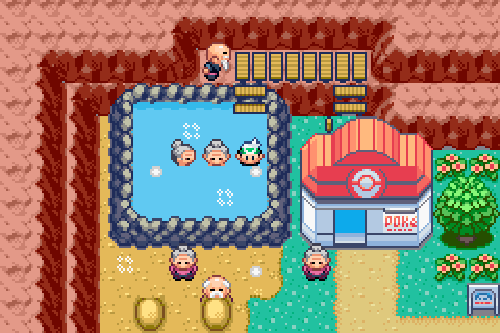

This game engine was basically a test run to using HTML5 canvas. I started playing around with canvas and I decided that it seemed like it'd be really easy to make a basic sprite based map. It was, so it took it further.
I added a timer to refresh the canvas repeatedly, and a character you can move around. Eventually, I even added a panning camera and the ability to zoom out or zoom in, but you can't access that through normal gameplay.
The movement is a little bit finnicky, and I never finished the map editor. The last thing I was working on was events. If you move over the black square, you can see the player character teleport - those are events. Events would have gone on to do such things as open dialogue boxes and give the player key items - had the engine been finished.
If I ever revive this project, it'll probably go hand-in-hand with a full rewrite, so this version probably ends here.
Also, I made the sprites myself!
Controls
Use WASD to move. Hold shift to run.
Type the password "debugmode" to activate debug mode.